Since then. The three emulator fixes this report re-checks landed in
b15b8f7. The counts in the summary above are the emulator walkthrough's; the real-device pass on the Galaxy Tab S7 FE adds twenty-one checks of its own, further down. R-2, the tablet photo-preview sliver, has since been fixed like the rest — the preview is capped at 360 points — while R-1, the camera eviction, has not: it stands as a known limit, recorded inDECISIONS.md.
Verdict
DEFECTS at the time of this pass; all five have since been fixed and re-verified — the first three under Re-check after fixes, the two spoken-output ones under Re-check of the spoken-output defects. 53 of 56 checks pass. The three questions the README singles out for Android all pass: the system back gesture and the back key both hold on the confirmation screen, the camera action is correctly absent on the emulator with the library path offered instead, and edge-to-edge insets are respected on every screen. Two accessibility defects were found, both TalkBack-only and neither visible to a sighted touch user, plus one low-severity layout observation. No crash, no app-originated LogBox, no red box.
A later pass captured what TalkBack actually says, rather than counting utterances. It confirmed the three fixes at the spoken level and turned up two further defects in the spoken output — A (medium) and B (low), one of them a reading this page had previously recorded as passing. Both have since been fixed and heard again: see TalkBack spoken text and its re-check.
The blue gear at the top right of every screenshot is Expo Go's own floating dev-tools button, drawn over the app. It is not part of the app and is ignored throughout.
Environment
| What | Value |
|---|---|
| Device | Android emulator, AVD Pixel_API_36 (sdk_gphone64_arm64, google_apis image, no Play Store) |
| OS | Android 16, API 36, build BE2A.250530.026.F3 |
| Screen | 1080 × 2424 at 420 dpi, gesture navigation |
| Client | Expo Go 57.0.9 (versionCode 444, targetSdk 36) |
| Project | expo ~57.0.22, react-native 0.86.3, expo-router ~57.0.21 |
| Font scales | 1.0 for the walkthrough, 2.0 for the sweep — the emulator accepted 2.0, so no fallback to 1.3 was needed |
Developer settings
| # | State | Expected | Observed | Verdict |
|---|---|---|---|---|
| 1 | Home, development mode | "Developer settings" link present | Present, opens a modal | PASS |
| 2 | Modal opened | Practice / Latency / four faults / Force offline / Apply | All present, header "Cancel" on the left | PASS |
| 3 | Radio semantics | Each option a radio with a checked state | android.widget.RadioButton, checked=true/false, accessible name = the option label | PASS |
| 4 | Change practice, latency, a fault, Force offline | Selection follows the tap | Upload-photo fault to Server and Force offline on, both reflected in the tree | PASS |
| 5 | Cancel after editing | Settings unchanged | Home has no offline banner; reopening shows every control back at its default | PASS |
| 6 | Apply and go home | Applies, clears the cache, returns home | Returns home; the next entry fetches for the chosen practice and the reference counter restarts at ec-1 | PASS |


The flow
Default practice prc-0421, font scale 1.0.
| # | State | Expected | Observed | Verdict |
|---|---|---|---|---|
| 7 | Step 1 pristine | "STEP 1 OF 3", three recipients, Continue disabled | Exactly that; Continue reports enabled=false | PASS |
| 8 | Step 1 radio semantics | Radios with a selected state, one at a time | Three RadioButton nodes, names "Dr. J. de Vries, GP" / "M. Bakker, Practice nurse" / "S. Jansen, Practice assistant" | PASS |
| 9 | Recipient chosen | That card checked, the others unchecked, Continue enabled | Exactly that | PASS |
| 10 | Step 2 | "STEP 2 OF 3", one required choice plus one optional free-text | Exactly that | PASS |
| 11 | Step 2, Continue with nothing answered | Red "This question is required", route unchanged, error folded into the label's accessible name | Exactly that | PASS |
| 12 | Step 2, answer the question | Error clears | Red text gone from the screen and from the tree; the label's accessible name does not reset | FAIL — defect 1 |
| 13 | Step 3 | "STEP 3 OF 3", To-row with Change, message field plus hint, photo block, Send | Exactly that | PASS |
| 14 | Step 3, camera on an emulator | No "Take a photo"; the note and the library path instead | "The camera isn't available on this device. You can choose a photo from your library." plus "Choose from library". No camera action anywhere in the tree | PASS |
| 15 | Step 3, Send with an empty message | "Please write your question before sending", route unchanged, field still editable | Exactly that; the error is folded into the field's accessible name | PASS |
| 16 | Step 3, type a message | Error clears from the screen and from the accessible name | Both reset correctly — the contrast case for defect 1 | PASS |
| 17 | Step 3 with the keyboard up | Field stays visible, nothing under the status or gesture bar | Field fully visible above the keyboard | PASS |
| 18 | Thin message | The "a little more detail" nudge appears | Appears below the field | PASS |
| 19 | Photo via the library path | System picker opens, no permission dialog needed | Android's photo picker opened directly; the Android 13+ picker needs no permission | PASS |
| 20 | Photo selected | Preview labelled "Your photo" plus "Remove photo" | Exactly that; "Choose from library" replaced | PASS |
| 21 | Send at Slow (5 s) — the send lock | Change, Choose from library and Send all disabled; "Sending your message"; Send reads "Sending" | Exactly that, and Change, the back key and the back-edge swipe were all no-ops during the window | PASS |
| 22 | Confirmation | "Message sent", "Sent to …", reply-time line, "Reference: ec-1", "Your photo was attached.", Done | Exactly that; the nav bar reads "Sent" with no back control | PASS |
| 23 | Back key on the confirmation | Must not leave | Stays. Tree unchanged | PASS |
| 24 | Back-edge swipe on the confirmation | Must not leave | Stays. Tree unchanged | PASS |
| 25 | Done | Returns home | Home | PASS |


Failures and offline
| # | State | Expected | Observed | Verdict |
|---|---|---|---|---|
| 26 | Fail: Create message = Network, then Send | "Your message wasn't sent" plus the network copy plus "Try again"; route unchanged | Exactly that, in a red card; the field stays editable | PASS |
| 27 | Try again after a create failure | The same single error, never a second card | One card, identical wording | PASS |
| 28 | Error card position | Reachable | The card and both Send / Try again sit below the fold and the screen does not scroll them into view | Observation — defect 3 |
| 29 | Fail: Upload photo = Server, Send with a photo | Intermediate "Message sent, adding your photo", then the confirmation with the failed line, Try again and Continue without the photo | Exactly that | PASS |
| 30 | Try again on the failed photo | Busy "Attaching your photo", then the "still couldn't be attached" line added once | Exactly that | PASS |
| 31 | Try again a second time | The line stays present exactly once | Layout byte-identical; no duplicate | PASS |
| 32 | Continue without the photo | Alert gone, Done remains | Exactly that | PASS |
| 33 | Force offline on | Banner on home | "You're offline. You can keep writing, but sending needs a connection." | PASS |
| 34 | Force offline, steps 1 to 3 | Banner on every step | Present on all three | PASS |
| 35 | Force offline, Send | Disabled even with text typed | enabled=false with a full message in the field | PASS |
| 36 | Offline on the confirmation, Try again | Disabled | Link dropped while on a partial-failure confirmation: the banner appeared, Try again went enabled=false, Continue without the photo and Done stayed enabled | PASS |
| 37 | Back online | Banner clears, Retry re-enabled | Both, within seconds of restoring the link | PASS |
Check 36 needed a real link drop: reaching the confirmation requires a successful send, so Force offline cannot be switched on from the home screen and still leave a confirmation to look at. Dropping the emulator's Wi-Fi and data while sitting on the partial-failure confirmation exercises the same code path, since NetworkProvider treats a real isConnected === false exactly as it treats the forced flag.


Navigation and form factor
| # | State | Observed | Verdict |
|---|---|---|---|
| 38 | prc-0873 | Two recipients, "STEP 1 OF 2"; Continue goes straight to "STEP 2 OF 2" / "To: Dr. A. Visser" | PASS |
| 39 | prc-0873 send | "Sent to Dr. A. Visser." | PASS |
| 40 | prc-0000 | "Your practice hasn't switched on e-consults in the app yet" / "You can still phone the practice with your question." / "Back to start" returns home | PASS |
| 41 | Back key from step 3 | Goes to step 2, no dialog. That is the design: useDiscardGuard is mounted on step 1 only, so the guard fires when leaving the flow, not when moving inside it. The draft survives | PASS (by design) |
| 42 | Back key from step 1 with a draft | "Discard your message?" / "Your message and photo will be lost." with Keep writing / Discard. Android's AlertDialog renders the labels uppercase — platform styling, not app copy | PASS |
| 43 | Home header button from step 1 with a draft | The same dialog | PASS |
| 44 | Keep writing | Walked forward: the recipient still checked and the message text byte-identical | PASS |
| 45 | Discard, Home button variant | Home; the next Write shows three unchecked recipients, Continue disabled, empty message | PASS |
| 46 | Discard, back key variant | Home | PASS |
| 47 | Not-found route | Correct copy, and the link works when tapped, but it is not an actionable accessibility node | FAIL — defect 2 |
| 48 | Rotation to landscape on the message step | The app stays portrait. app.json declares "orientation": "portrait" and Expo Go honours it: with the device rotated to landscape and auto-rotate off, the app window stayed in portrait | PASS (by design) |
| 49 | Edge-to-edge, status bar | Every screen's content starts below the status bar; the native header is inset correctly | PASS |
| 50 | Edge-to-edge, gesture navigation bar | Primary actions clear the gesture pill on every screen, including the longest scroll views | PASS |


Largest text size
The emulator accepted a font scale of 2.0, so the sweep ran at the full 2× rather than the 1.3× fallback. The app was relaunched after the change.
| # | State | Observed | Verdict |
|---|---|---|---|
| 51 | Home | Copy reflows to four lines, all controls reachable | PASS |
| 52 | Developer settings | Every group and the Apply button render cleanly; the header's "Cancel" stays compact because header buttons cap at 1.3× | PASS |
| 53 | Step 1 | Clean; the radio indicator stays aligned right | PASS |
| 54 | Step 2 with the required error, Continue pressed from the bottom of the page | The offending field and its error both scroll to the top of the viewport, with the red error directly under the label | PASS |
| 55 | Step 3 with the empty-message error, Send pressed from the bottom | The field and its error scroll into view; the field gains a red border | PASS |
| 56 | Step 3 with a photo, confirmation, offline banner | Preview, "Remove photo" and Send all clean; the confirmation fits without scrolling; the offline banner wraps to three lines inside its box | PASS |


Defects
1 — MEDIUM · Questions step · a corrected choice question keeps announcing its old error
FIXED — re-verified 2026-09-14. ChoiceGroup now names its label unconditionally, and the stale Error: no longer survives the correction.
What a user sees. Nothing, if they can see. With TalkBack on, a patient who leaves the required question blank, hears "Error: This question is required", then answers it correctly, still hears "How long have you had this problem? (required). Error: This question is required" every time that label is focused, for the rest of the screen's life. The red error text has already disappeared, so the spoken state and the visible state disagree and there is no way to make it stop.
Repro (font scale 1.0, prc-0421):
- Home, then Write to your practice, pick any recipient, Continue.
- On step 2, press Continue without answering. The red "This question is required" appears and the label's accessible name becomes
How long have you had this problem? (required). Error: This question is required. - Answer the question. The red text disappears from the screen and from the accessibility tree.
- Read the accessibility tree — the label's accessible name is unchanged.
Persists across a re-read after 3 s, across selecting a different option, and across a scroll that forces re-layout.
Why. src/components/ChoiceGroup.tsx passes accessibilityLabel={error ? accessibleName(visibleLabel, error) : undefined}. React Native on Android does not clear a previously set contentDescription when the prop goes back to undefined. src/components/TextField.tsx passes accessibilityLabel={accessibleName(visibleLabel, error)} unconditionally — accessibleName() returns the plain label when error is falsy — so the text field resets correctly, which is why the message step does not have this bug and is the contrast case in check 16.


Text evidence: a11y-choicegroup-stale-label.txt
2 — MEDIUM · Not-found screen · the only way out is invisible to TalkBack
FIXED — re-verified 2026-09-14. The escape is now an android.widget.Button with a click action and an accessible name.
What a user sees. A sighted user taps "Go to the home screen" and it works. A TalkBack user hears it as plain text with no role and no "double-tap to activate", and because the node exposes no click action it is skipped entirely when swiping between controls. On a screen whose whole purpose is to offer an escape, the escape is not announced as one.
Repro: open the route exp://10.0.2.2:8083/--/nowhere, then read the accessibility tree.
The node is android.view.View, clickable="false", with an empty accessible name. Every other action in the app is an android.widget.Button with clickable="true" and an accessible name.
Why. src/app/+not-found.tsx uses a bare expo-router <Link> styled as text, with no accessibilityRole and no pressable wrapper. Elsewhere the app routes every action through TextButton / PrimaryButton, which is what gives those the role and the click action.

Text evidence: a11y-not-found-link.txt
3 — LOW · Message step · after a failed send, both recovery buttons are off-screen
FIXED — re-verified 2026-09-14. The step now scrolls the error card into view and moves screen-reader focus to it, so the card, Try again and Send all land inside the viewport.
What a user sees. The patient presses Send, the request fails, and the error card is inserted above the Send button. At the default font scale the card's heading and body land at the very bottom edge and both "Try again" and "Send" are pushed below the fold; the view does not scroll. The feedback is visible enough to notice, but the user has to scroll to act on it.
Repro: Developer settings, Fail: Create message = Network, Apply, walk to step 3, type a message, Send.
Not Android-specific as far as this run can tell — the same insertion order would do the same on iOS, and the phone lane did not flag it. Recorded as an observation rather than a regression.
A — MEDIUM · Questions step · the required-field error is spoken twice
Fixed and re-verified. The error is now spoken once, by the focus move to the invalid question, whose name already carries it; the standalone announcement is gone. What a patient heard before and why is in Defect A under TalkBack spoken text; the re-check is in Re-check of the spoken-output defects.
B — LOW · Confirmation · "Message sent" is spoken twice on arrival
Fixed and re-verified. The confirmation heading speaks it once and the message step's status line is no longer announced. What a patient heard before and why is in Defect B under TalkBack spoken text; the re-check is in Re-check of the spoken-output defects.
TalkBack
Available: yes. The google_apis image ships the Android Accessibility Suite (com.google.android.marvin.talkback). TalkBack was enabled for this pass, confirmed bound and speaking, and disabled again at the end.
Every figure below is an utterance count, one per speech-synthesis request, read from the speech-synthesis request log. The exact wording was captured in a later pass and is in TalkBack spoken text. The counts were calibrated first:
- one
announceForAccessibility()produces exactly one synthesis request, whatever its sentence count — proved twice, with the two-sentence offline message and the three-sentence error-card message; - a TalkBack focus event on a composed control is several requests, because name, role and hint are separate utterances: focusing the message field alone is three.
| Message | Utterances | Reading |
|---|---|---|
| Offline banner appears | 1 | Spoken once. OfflineBanner is deliberately not a live region and the provider announces — no double-speak. PASS |
| Back online | 1 | Spoken once; banner cleared and Retry re-enabled. PASS |
| Create-failure error card appears | 1 | The announcement lands alone 3 s after the Send, clear of the activation chatter. ErrorState announces in an effect and the alert is not a live region — no double-speak. PASS |
| Sending status | 2, 13 ms apart at activation | One is TalkBack reporting the button's own change to "Sending, busy", one is announce("Sending your message"). Not separable without the text. PARTIAL |
| Validation error on the message step | 3, identical to the 3 for focusing the errored field with no new validation | Equal totals mean announce() adds no extra pass: the focus change collapses the queued announcement, so the error is heard once, as part of the field's accessible name. PASS, inferred from counts |
| Photo-failed line on the confirmation | 3 across the whole Send-to-confirmation transition | Activation, "Message sent, adding your photo", then the confirmation's heading focus plus the failed line. A live region plus an announcement would have produced more. No double-speak. PASS |


Text evidence: talkback-method-and-counts.txt
Not verified
The wording of TalkBack's utterances was captured in the later pass — see TalkBack spoken text — including the spoken hints on a disabled Send or Retry and on a disabled Continue, which are not exposed as separate attributes in the accessibility tree. The disabled state those hints explain was verified in checks 7, 35 and 36. What follows was not verified at all.
The step 1 loading state.Now verified on hardware — the skeleton and its accessible name were captured on the tablet, see Real device, check R15.The practice-config and care-team fault states.Now verified on hardware — both fetch faults were exercised on the tablet, see checks R16 to R20.Camera capture.Now driven on hardware — "Take a photo" is offered on the tablet and the capture works end to end, see checks R1 to R9. That pass found defect R-1.- Landscape layout. Not reachable on the emulator, and still open: the real-device pass found the host activity is not portrait-locked at the platform level in Expo Go, so this reading needs re-testing by hand on hardware.
- Predictive back.
app.jsonsets"predictiveBackGestureEnabled": false, so the Android 14+ predictive-back animation was not exercised; only the classic back gesture and back key were, and both behave correctly. - Multi-window and split screen, and dark mode. Out of scope.
A real device.Now covered for camera capture, the header labels and the read faults — see Real device. Rotation while the camera is open remains open there.
Logs and crashes
None. No crash, no app-originated LogBox, no red box, and no bundler warning beyond the bundle lines. The one LogBox that appeared was Expo Go's own "Cannot connect to Expo CLI" warning, caused deliberately by dropping the emulator's network to test the offline state on the confirmation screen; it cleared on reload.
Re-check after fixes
Same emulator, same Expo Go build. Expo Go was force-stopped and relaunched so the three fixes loaded as a cold bundle rather than a hot reload. Each defect was re-driven with its original repro steps, and the happy path was walked once more at a font scale of 2.0.
| Defect | Expected after the fix | Observed | Verdict |
|---|---|---|---|
| 1 — stale choice-question error | Once the required question is answered, the label's accessible name equals the plain label with its (required) suffix and contains no Error: | Pristine: How long have you had this problem? (required) — named even before any validation, which it was not before. After Continue with nothing answered: … (required). Error: This question is required. After answering: back to How long have you had this problem? (required), the red row gone from the screen and from the tree. Unchanged after a 3 s re-read, after selecting a different option, and after a scroll that forces re-layout | PASS |
| 2 — not-found escape not actionable | The home action is an android.widget.Button, clickable=true, with an accessible name, and tapping it lands on home | [android.widget.Button] clickable=true enabled=true bounds=[42,578][1038,704] named Go to the home screen — it was android.view.View, clickable=false, with an empty accessible name. The box is 126 px at 420 dpi = 48 dp, so it clears the 48-point minimum too. Tapped: the home screen, with the header's back arrow gone, so router.dismissTo("/") left no not-found entry on the stack | PASS |
| 3 — recovery buttons off-screen after a failed send | With no scrolling, the error card, "Try again" and "Send" all sit inside the viewport, and screen-reader focus moves to the card | The view scrolls itself: the "Your message" heading is clipped at the top, which it was not before the Send. Card [84,1647][996,1899], Try again [84,1941][996,2067], Send [42,2172][1038,2298] — all three end above y=2424, and Send still clears the gesture pill. With TalkBack on, the green accessibility-focus rectangle is drawn at x≈82–992, y≈1614–1885: exactly the alert view, not the Send button that was double-tapped | PASS |
| Regression sweep at a font scale of 2.0 | The questions → message → confirmation happy path still renders with nothing clipped or overlapping | The questions step reflows to two-line labels with the radio cards intact; the message step wraps its hint to three lines and keeps the field and the photo block clean; the confirmation fits without scrolling and reads "Message sent" / "Sent to Dr. J. de Vries." / "Reference: ec-1" / Done, with the nav bar at "Sent" and no back control | PASS |
The system reports accessibility focus only at window granularity, never naming the focused node, so defect 3's focus evidence is TalkBack's own focus highlight in R3d, read against the node bounds from the same accessibility tree.


One new observation, not from these fixes
A single LogBox appeared on one cold launch, on the home screen: "Can't perform a React state update on a component that hasn't mounted yet. This indicates that you have a side-effect in your render function that asynchronously tries to update the component."
Its call stack is entirely inside node_modules: url.then$argument_0 at expo-router/build/fork/useLinking.native.js:127 calling dispatchSetState on ContextNavigator (expo-router/build/ExpoRoot.js:135), under ExpoRoot → App → WithDevTools. No application frame appears anywhere in it, and none of the three fixes touches router linking or the root navigator. It is expo-router's getInitialURL() promise resolving before the navigator has mounted — a race only a deep-link cold start can lose. It did not reproduce on two further cold launches of the same bundle, so it is intermittent rather than deterministic. Whether it also occurs on the pre-fix code was not bisected. Recorded as an observation against expo-router, not as a defect of this feature.
State left behind. Font scale back to 1.0 (verified), TalkBack disabled and confirmed unbound, with touch exploration off. Developer settings back at prc-0421 with Fail: Create message returned to None.
TalkBack spoken text
Same emulator, same Expo Go build. TalkBack's on-screen speech output was switched on for this pass, so every sentence it speaks is drawn on the screen as it is spoken and is caught in the screenshots below. TalkBack draws an app announcement on a red ground and the reading of whatever holds screen-reader focus on grey, which is how the two are told apart throughout.
This section carries the wording behind the counts in the TalkBack section, and corrects one reading inferred from them: the validation-error reading recorded there as passing did not generalise to the questions step, where the wording showed the error spoken twice. Both spoken-output defects this section found have since been fixed and heard again — see the re-check at the end.
"Times" is the number of separate utterances that carried the sentence. Once is a pass.
| Event | Expected | Spoken text observed | Times | Verdict |
|---|---|---|---|---|
| Focus an unselected recipient card | Name, role, radio-button role, unchecked state | not checked. Dr. J. de Vries, GP. Radio button | 1 | PASS |
| Focus the selected recipient card | The same, reading checked | checked. Dr. J. de Vries, GP. Radio button | 1 | PASS |
| Focus Continue on step 1 with nothing chosen | Disabled state and the reason | Continue. Button. Choose who you are writing to first. disabled | 1 | PASS |
| Continue on the questions step with nothing answered | The error once, focus on the field whose name carries it | This question is required — then, 1.7 s later — How long have you had this problem? (required). Error: This question is required | 2 | FAIL — defect A |
| Focus the same question after answering it | The label with no Error: | How long have you had this problem? (required) | 1 | PASS |
| Send on the message step with an empty message | The error once, focus on the field | What would you like to ask?. Error: Please write your question before sending | 1 | PASS |
| Send with a message — the busy state | "Sending your message" once | Sending your message | 1 | PASS |
| Send with a message — arriving on the confirmation | The heading read on arrival | Message sent as a status announcement, then the screen title Sent, then Message sent again as the focused heading | 2 | Heading PASS; the repeat is defect B |
| Send with a photo that fails to upload | The photo-failed line once | Full sequence: Sending your message → Message sent, adding your photo → Your message was sent, but the photo could not be attached. → Sent → Message sent (heading) | 1 | PASS |
| Going offline | The banner once | You're offline. You can keep writing, but sending needs a connection. | 1 | PASS |
| Focus Send on the message step while offline | Disabled state and the reason | Send. Button. You're offline. Sending needs a connection.. disabled | 1 | PASS |
| Moving between steps while still offline | The banner is not repeated on each screen | Only Step 2 of 3: A few questions from your practice; the banner sentence is not spoken again | 0 repeats | PASS |
| Send with the create call failing | The error card once, with a sentence break | Your message wasn't sent. We couldn't reach your practice. Check your connection and try again. | 1 | PASS |
Reading order. TalkBack's default node order on this device is state, then name, then role, so a recipient card reads "not checked. Dr. J. de Vries, GP. Radio button" rather than name-first. That is the screen reader's ordering, not the app's, and the content is complete either way.
{kind=link}
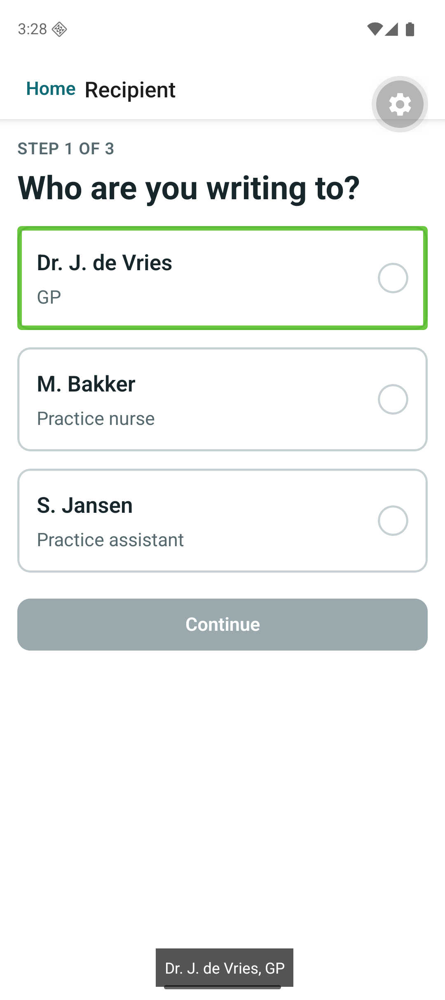
{kind=link}
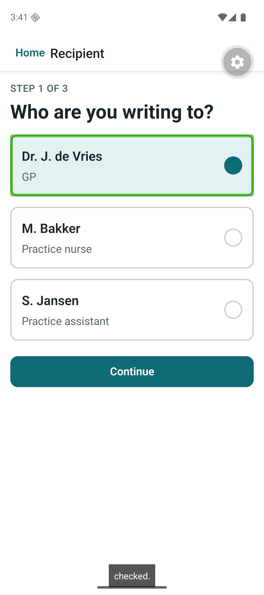
{kind=link}
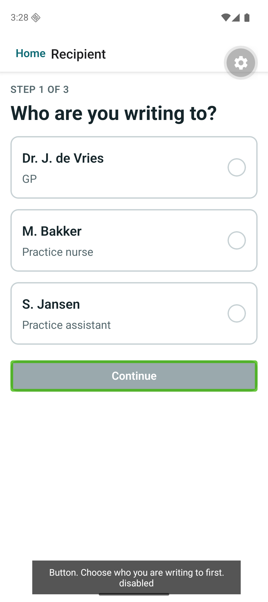
{kind=link}
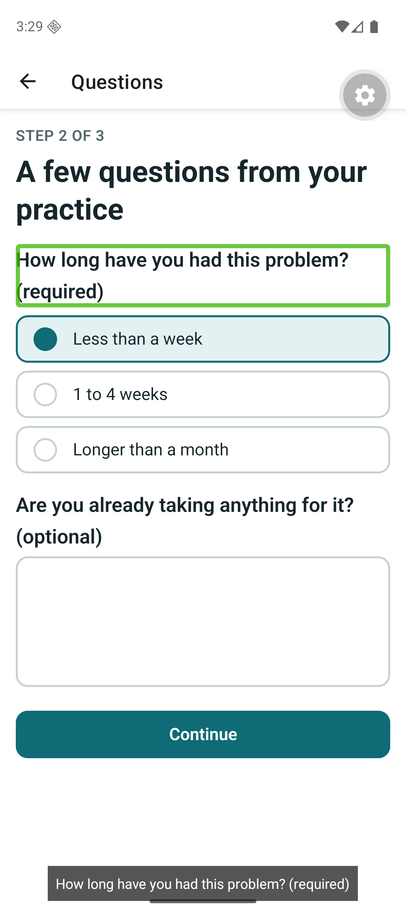
{kind=link}
{kind=link}
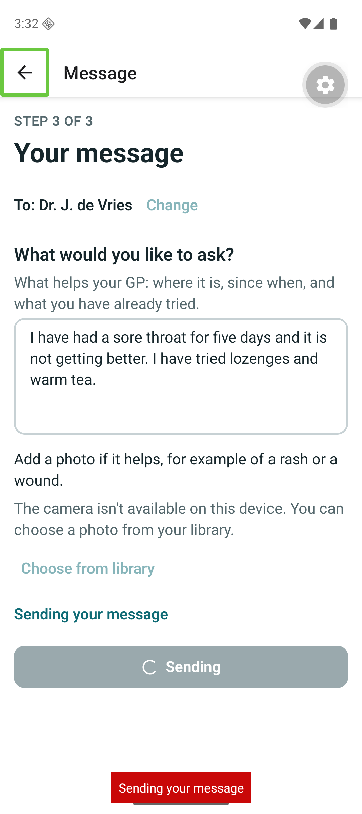
{kind=link}
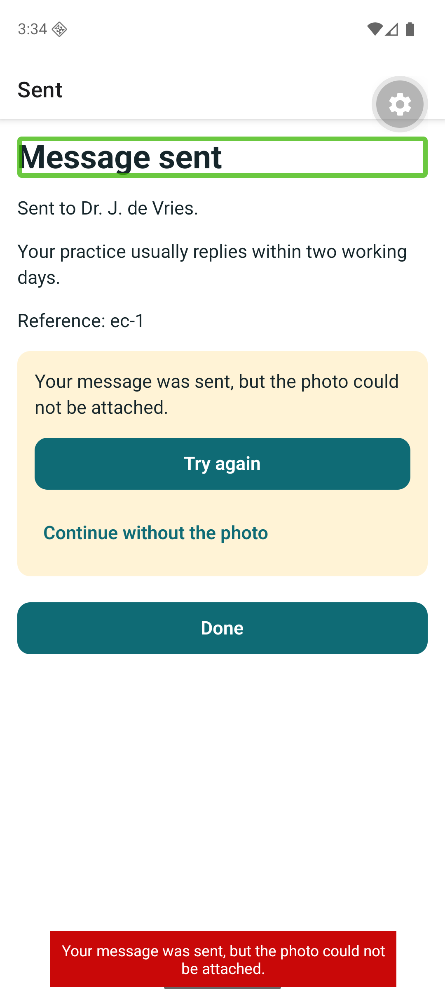
{kind=link}
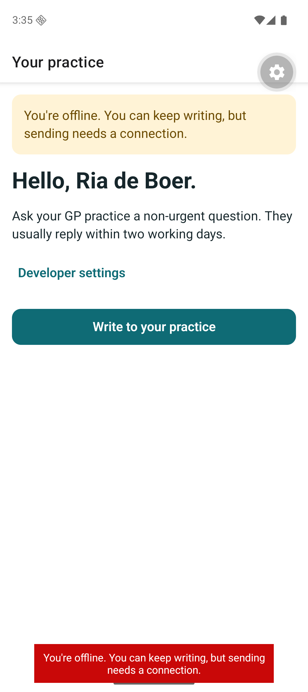
{kind=link}
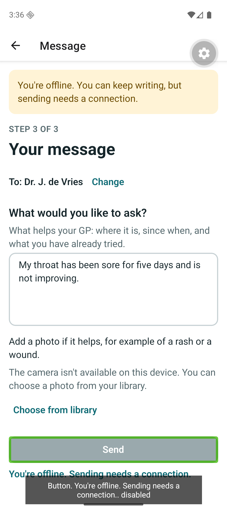
{kind=link}
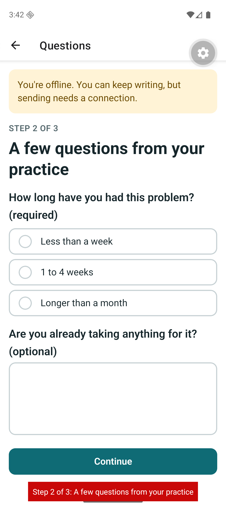
{kind=link}
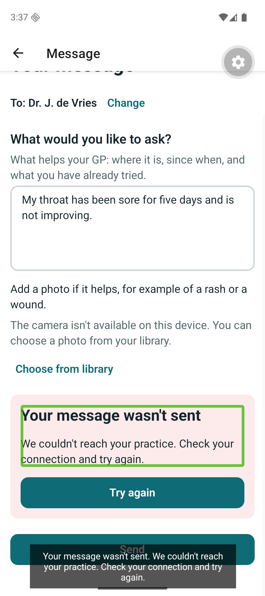
Defect A — MEDIUM · Questions step · the required-field error is spoken twice
What a patient hears. Press Continue on the questions step with the required question unanswered. TalkBack says "This question is required". About 1.7 seconds later it says "How long have you had this problem? (required). Error: This question is required". The same sentence, twice in a row, with nothing the patient can do to stop the second one.
Why. The step does two things in sequence: it announces the error, then it moves screen-reader focus to the question, whose accessible name already ends in that same error. TalkBack treats an app announcement as uninterruptible by new speech, so the focus reading queues behind it and both are heard in full.
The message step performs the identical pair of actions and escapes the repeat only by accident of widget type. Its focus target is a real text field, so moving focus there also raises an input-focus event, and that is what cuts the announcement off — before a single word of it is spoken. The questions step's focus target is a grouping view that takes no input focus, so nothing cuts it off. The "announced once" rule therefore holds on the message step for a reason that does not generalise.
Reproduced on two separate runs.
{kind=link}
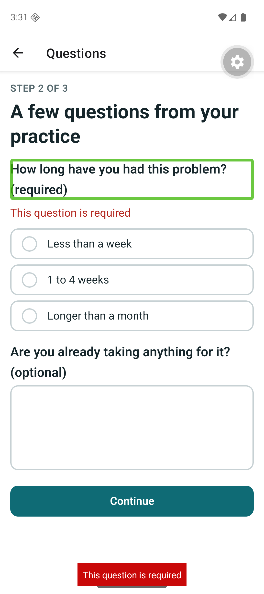
{kind=link}
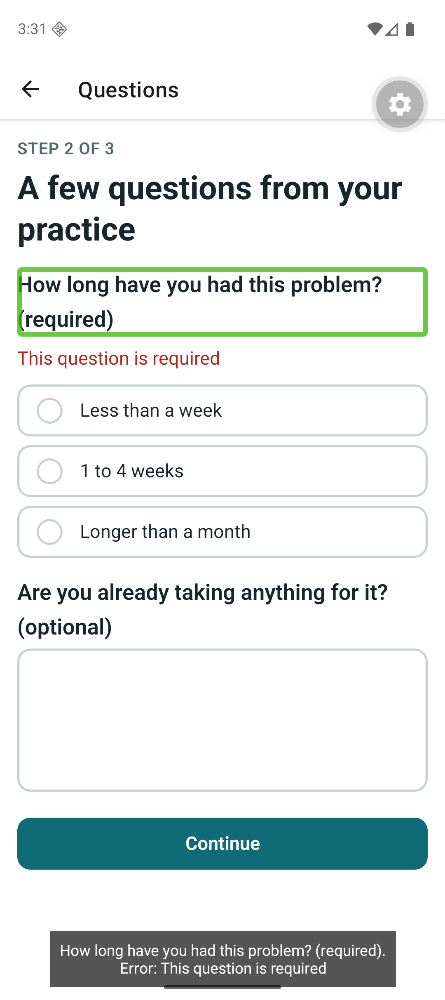
Defect B — LOW · Confirmation · "Message sent" is spoken twice on arrival
What a patient hears. After a successful send: "Sending your message", then "Message sent", then "Sent" (the screen title), then "Message sent" again. The message step's success status line and the confirmation's heading are the same words, and both are spoken.
Why TalkBack's own duplicate filter does not catch it. When the same sentence is pending twice, TalkBack drops the duplicate — that is exactly what keeps the create-failure error card down to one utterance, where the announcement and the card's focus reading carry identical text. Here the status announcement has already finished speaking by the time the heading is focused, with the screen title read in between, so there is no pending duplicate left to drop.
The heading being read on arrival is correct and wanted; it is the preceding status announcement that makes it a repeat.
{kind=link}
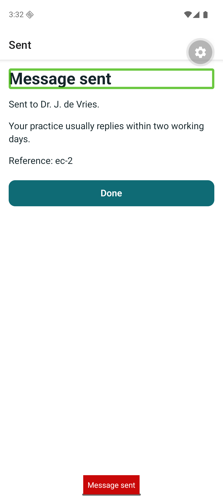
{kind=link}
Observation, not a defect
Hint strings that already end in a full stop produce a doubled stop where TalkBack joins name, hint and state: "You're offline. Sending needs a connection.. disabled", "What would you like to ask?. Error: …". It shows in the on-screen speech output and is inaudible in speech, since the synthesiser does not pronounce the punctuation. Cosmetic only.
What the wording confirms about the earlier fixes
- The corrected choice question no longer carries a stale error in what is spoken, not just in the tree: after answering, it reads as the plain label with its
(required)suffix and noError:. - The disabled Continue and the disabled Send both speak their reason and their disabled state, so the hint values the earlier pass could only find in source are confirmed as heard.
- On a failed send the error card takes screen-reader focus and is read out in full, with the card, "Try again" and "Send" all inside the viewport at the moment it is read.
State left behind. TalkBack disabled and its speech-output display switched back off; developer settings back at prc-0421, Latency Default, all four faults None, Force offline off; the app left on the home screen with no offline banner.
Re-check of the spoken-output defects
Same emulator, same Expo Go build, relaunched cold so the two spoken-output fixes loaded as a fresh bundle. TalkBack's on-screen speech output was switched on again, so each screenshot below carries the sentence as it was spoken, on the same red-for-announcement / grey-for-focus-reading ground as the rest of this section.
"Times" is again the number of separate utterances that carried the sentence, this time read from TalkBack's own speech log rather than from synthesis requests, so each utterance is named and the point at which one interrupts another is recorded. A sentence TalkBack starts and then cuts off within a few milliseconds is not counted, because no word of it is heard; where that happens it is called out in the observation.
| Event | Expected | Utterances observed | Times | Verdict |
|---|---|---|---|---|
| E3 — Questions step, Continue with nothing answered | The error once, carried by the field's own name, and no standalone announcement of it | How long have you had this problem? (required). Error: This question is required, spoken as the question's focus reading. The plain label starts 7 ms earlier from the input-focus event and is cut off by it before a word is audible. Nothing on TalkBack's red ground at any point in the window | 1 (was 2) | PASS |
| E5 — Message step, Send with an empty message | The error once | What would you like to ask?. Error: Please write your question before sending, spoken as the field's focus reading; the plain label starts 4 ms earlier and is cut off the same way. The field's role and hint follow as the rest of that one focus reading | 1 | PASS |
| E6 — Send with a message, the busy state | "Sending your message" once | Sending your message, as an app announcement. The button's own change to "Sending" was not spoken as a second utterance | 1 | PASS |
| E6 — Send with a message, arriving on the confirmation | "Message sent" once, spoken by the heading, with no status announcement of it | Sent (the screen title), then Message sent as the focused heading, then Heading. The status line is no longer announced | 1 (was 2) | PASS |
| E7 — Send with a photo that fails to upload (regression) | The photo-failed line once | The whole sequence: Sending your message → Message sent, adding your photo → Your message was sent, but the photo could not be attached. → Sent → Message sent (heading). The failed line itself: 1 | 1 | PASS |
| E9 — Send with the create call failing (regression) | The error card once | Your message wasn't sent. We couldn't reach your practice. Check your connection and try again., spoken as the card's focus reading, then Alert. No separate announcement | 1 | PASS |
Defects A and B are fixed. The questions step now reaches the patient through one channel only — moving screen-reader focus to the invalid question, whose name already ends in the error — so the sentence that used to be announced first and then read again is heard once. E3 was driven twice, with the same result both times.
The confirmation's "Message sent" is likewise heard once, from the heading, which is the reading that should survive. The photo path keeps its own status announcement, "Message sent, adding your photo", and that is right: it reports progress while the message step is still on screen, before the confirmation exists, and it is not a repeat of anything.
The observation about doubled full stops still stands — What would you like to ask?. Error: … — and is still cosmetic, since the synthesiser does not pronounce the punctuation.
{kind=link}
{kind=link}
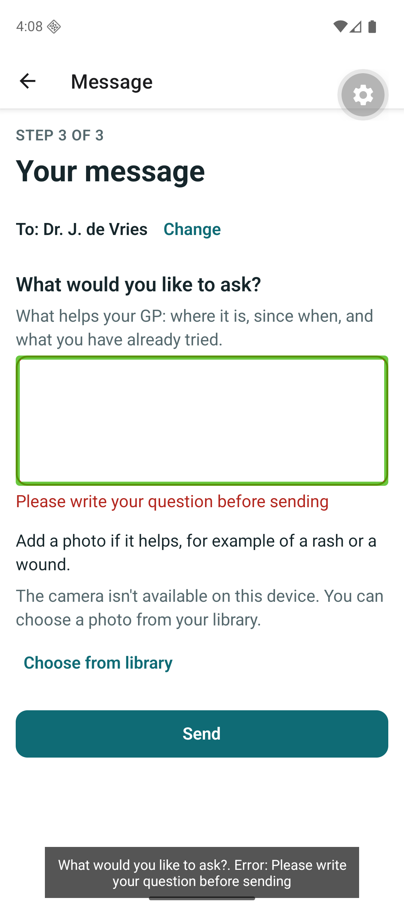
{kind=link}
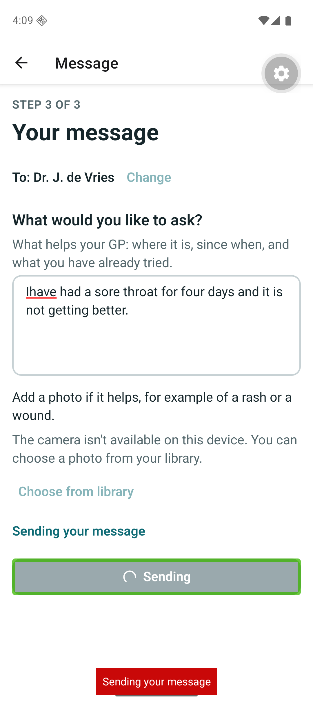
{kind=link}
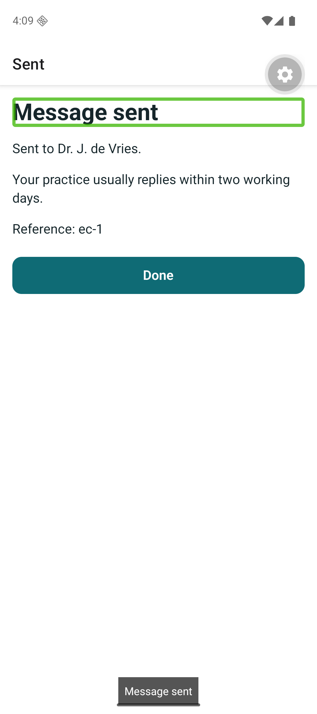
{kind=link}
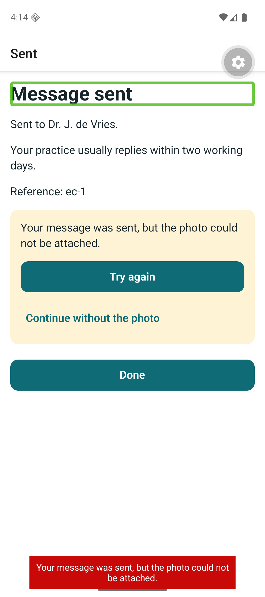
{kind=link}
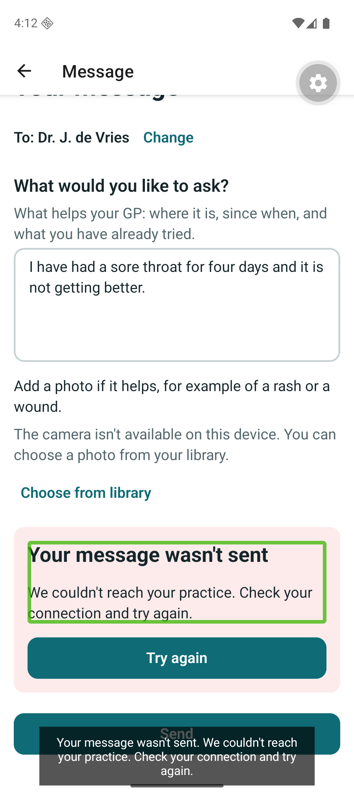
State left behind. TalkBack disabled and confirmed unbound with touch exploration off, and its speech-output display switched back off. Developer settings back at prc-0421, Latency Default, all four faults None, Force offline off; font scale 1.0, rotation automatic, the app on the home screen with no offline banner.
Real device: Samsung Galaxy Tab S7 FE
A second pass on physical hardware, on the same bundle as Re-check after fixes, loaded cold. It covers only the three things the emulator could not show: camera capture, the spoken labels on the header controls, and the two read-fault states on step 1. Everything above stands as recorded.
| What | Value |
|---|---|
| Device | Samsung Galaxy Tab S7 FE (SM-T733), physical tablet over USB |
| OS | Android 14 (One UI), with Samsung TalkBack |
| Screen | 1600 × 2560, 300 dpi effective (853 dp wide), gesture navigation |
| Client | Expo Go 57.0.9 |
| RAM | 3.4 GB total |
| Font scale | 0.8 — the tablet's own setting, left as the owner had it |
| Camera | Present; Samsung's system camera app answers the capture intent |
Screenshots for this section are the
D1-01toD1-18series, unrelated to theD1a/D1b/D2defect screenshots from the emulator pass. Two things in them are not the app: Expo Go's blue gear, as before, and a short grey pill at the top and bottom centre, which is One UI's own multi-window handle. The camera frames are almost black because the tablet's rear lens was against a dark surface; the capture succeeded, and the preview shows the real frame, sensor grain included.
DEFECTS. 19 of 21 checks pass, one fails and one could not be driven. The three questions this pass existed to answer are answered: "Take a photo" is offered and the capture works end to end, all four header controls carry a meaningful accessible name, and both read faults produce the right error state with a working retry — including the loading skeleton the emulator never held long enough to show. Against that, one real-device defect appeared that no emulator run could have found: the app's process is evicted while the system camera is in the foreground, and the patient comes back to an empty home screen with the message and the photo gone.
Camera capture
| # | State | Expected | Observed | Verdict |
|---|---|---|---|---|
| R1 | Step 3 on a real device | "Take a photo" offered, no camera-unavailable note | Both "Take a photo" and "Choose from library" present; the emulator's note is absent. The contrast case for check 14 | PASS |
| R2 | First "Take a photo" | A camera permission prompt | "Allow Expo Go to take pictures and record video?" with While using the app / Only this time / Don't allow. On later taps it does not reappear | PASS |
| R3 | After allowing | The system camera opens | Samsung's camera app, shutter and controls laid out for the tablet | PASS |
| R4 | Take a picture | A review screen with an accept action | Full-frame review with Retry and OK | PASS |
| R5 | Accept | Back in the app with the photo attached | Returned to step 3 with the message draft intact, the preview labelled "Your photo", "Remove photo" in place of the two source actions | PASS |
| R6 | Remove photo | Preview gone, both source actions back, message kept | Exactly that; the typed message is byte-identical | PASS |
| R7 | Surviving the camera round trip | Coming back from the camera keeps the draft | The app's process is evicted while the camera is in the foreground and the app cold-starts on the home screen; the message and the photo are gone. 4 of 5 captures ended this way | FAIL — defect R-1 |
| R8 | Attach again, then Send | Confirmation says the photo was attached | "Message sent" / "Sent to Dr. J. de Vries." / "Reference: ec-1" / "Your photo was attached." / Done. Driven with a photo from the library, because the camera round trip did not survive often enough to reach Send from a capture | PASS |
| R9 | "Choose from library" | System picker, no app permission prompt | Android's photo picker opened directly, no permission dialog, and the selection came back with the draft intact. No screenshot: the picker shows the owner's own photo library | PASS |
| R10 | Rotating to landscape with the camera open | The capture still returns correctly | Not verified. The system camera asks the platform to follow the physical accelerometer, so the display orientation cannot be changed while it is in front; turning the tablet by hand is the only way to drive this | NOT VERIFIED |
{kind=link}
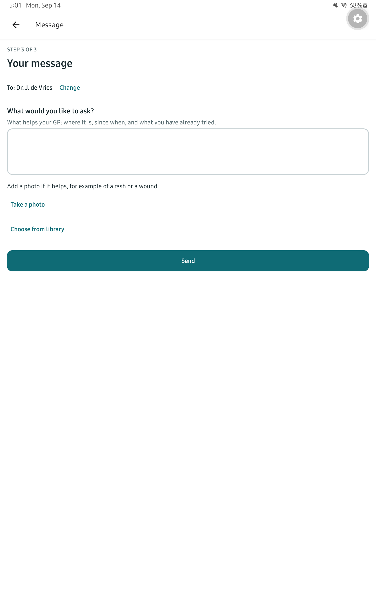
{kind=link}
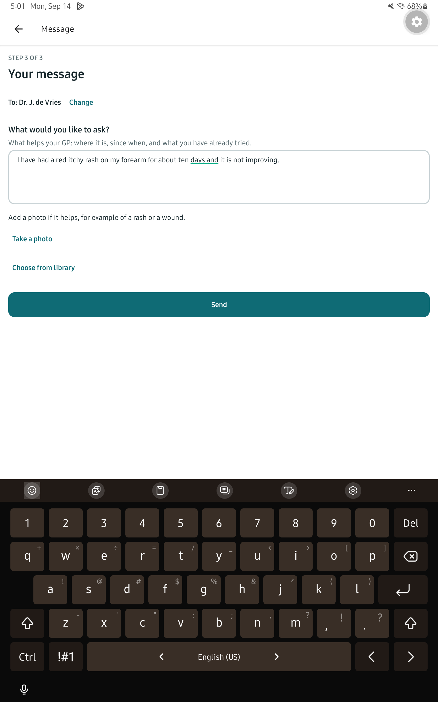
{kind=link}
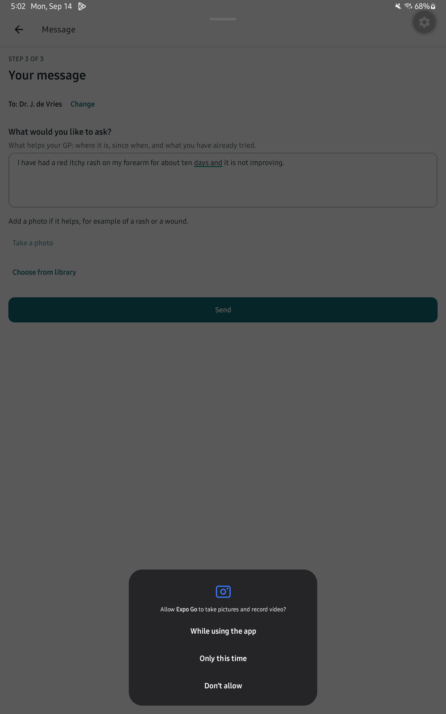
{kind=link}
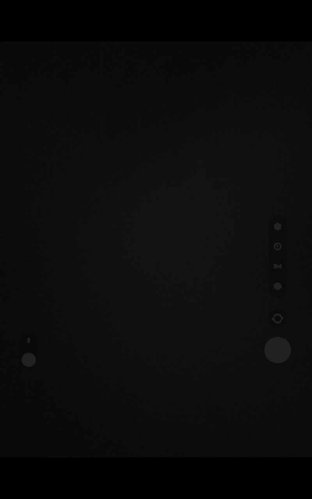
{kind=link}
{kind=link}
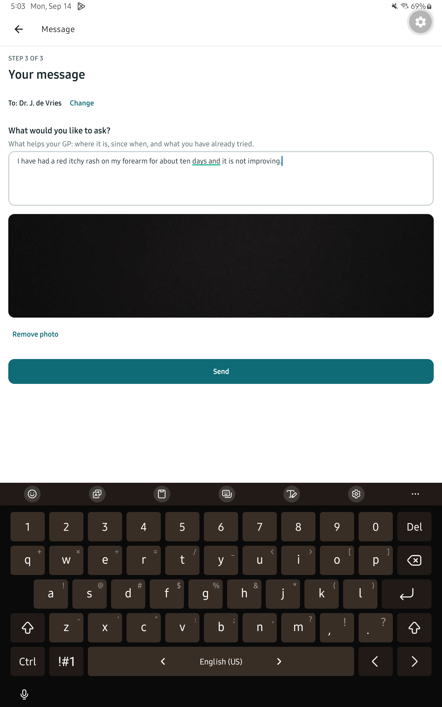
{kind=link}
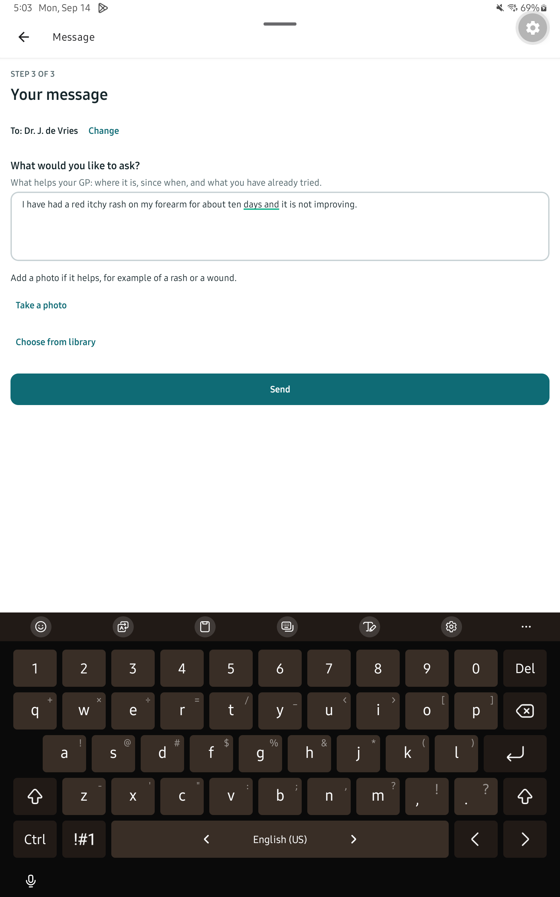
{kind=link}
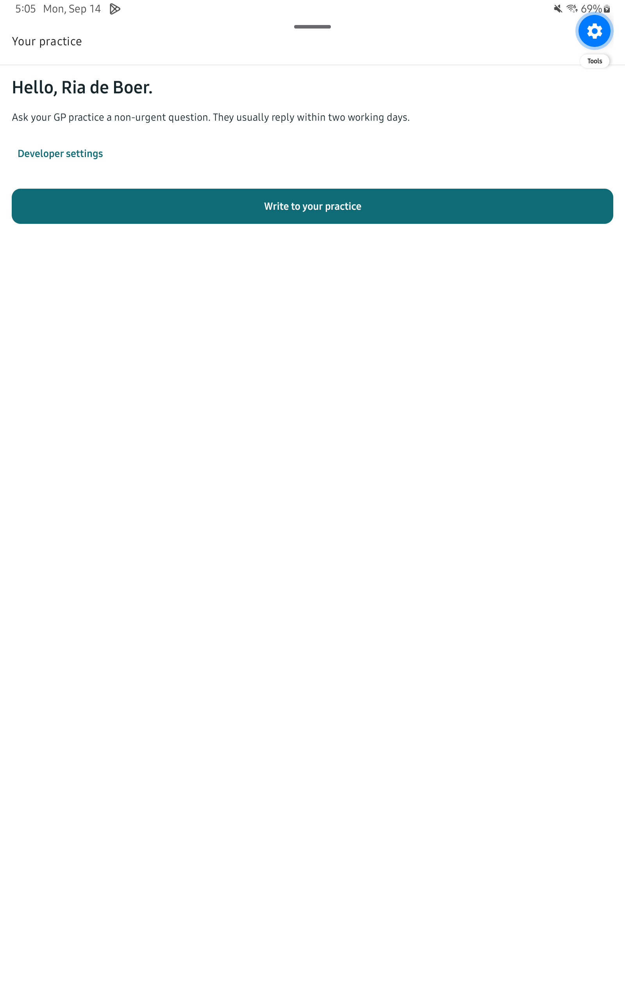
{kind=link}
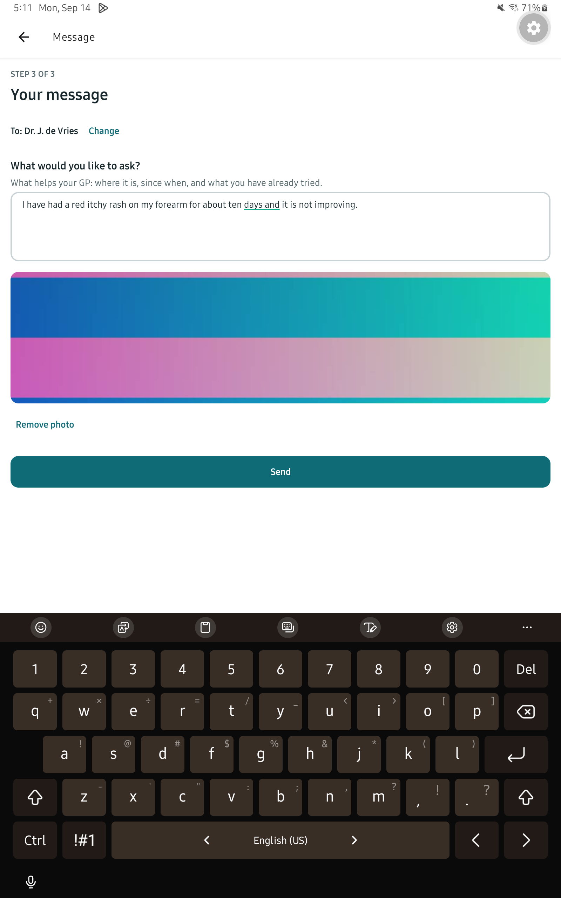
{kind=link}
Header controls, with a screen reader running
Samsung TalkBack was enabled for this group, confirmed bound and speaking. The name below is the control's accessible name as the platform exposes it, which is exactly the name TalkBack speaks; the wording was not captured from the speech stream, because screen-reader focus could not be moved onto the navigation header from this harness. The screenshots show the app under TalkBack with its focus indicator drawn.
| # | Control | Expected | Accessible name observed | Size | Verdict |
|---|---|---|---|---|---|
| R11 | Step 2 header back | A meaningful label | Navigate up — Android's convention, on a Button node with a click action | 56 × 64 dp | PASS |
| R12 | Step 3 header back | A meaningful label | Navigate up | 56 × 64 dp | PASS |
| R13 | Step 1 header Home | "Home" | Home | 53 × 48 dp | PASS |
| R14 | Developer-settings header Cancel | "Cancel" | Cancel | 58 × 48 dp | PASS |
No name is empty or generic, and all four clear the 48-point minimum.
{kind=link}
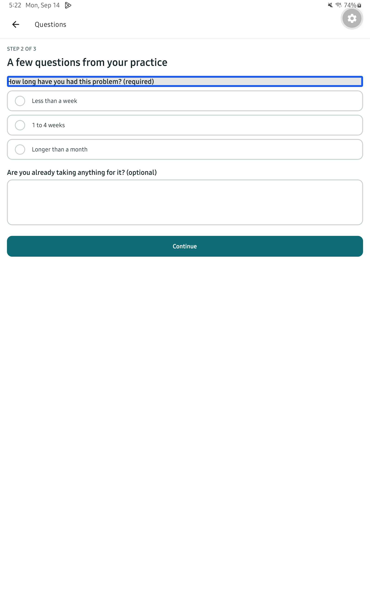
{kind=link}
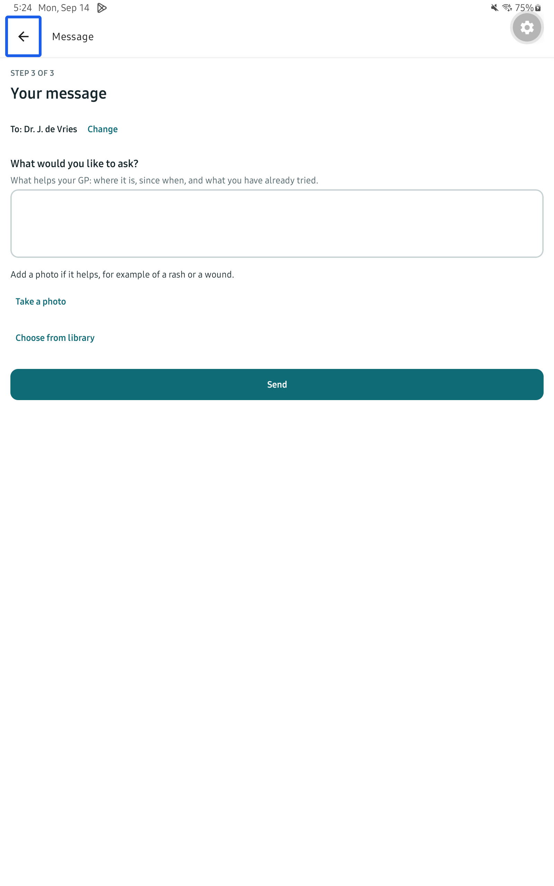
{kind=link}
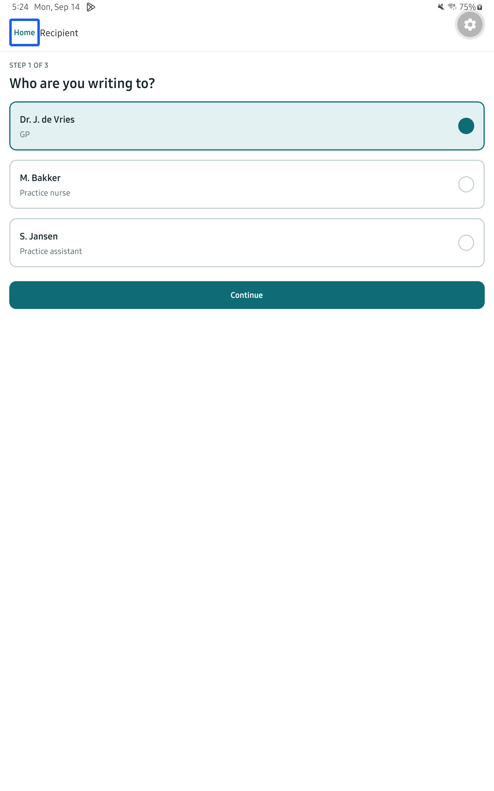
{kind=link}
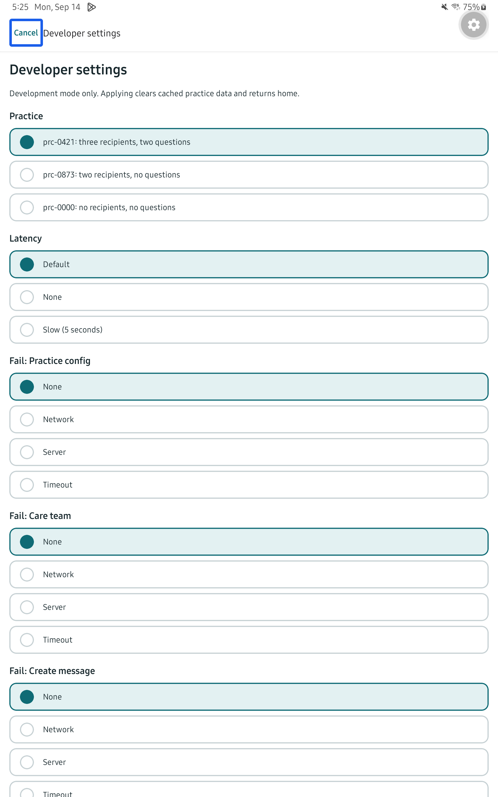
Step 1 read faults
| # | State | Expected | Observed | Verdict |
|---|---|---|---|---|
| R15 | Loading state | Three placeholder cards with an accessible "loading the care team" label | Three placeholder cards; the group's accessible name is Loading your practice's care team, busy. Slow latency was not needed — with a read fault armed the skeleton holds long enough on this device to capture | PASS |
| R16 | Fail: Practice config = Network | "We couldn't load your practice's details" with a retry | Exactly that, plus "Check your connection and try again." and a "Try again" button, in a red card at the top of the screen with nothing below the fold | PASS |
| R17 | Try again with the fault still armed | Re-runs the read, route unchanged | The skeleton reappears, then the same single error card. No second card, no navigation | PASS |
| R18 | Fault cleared, back into the flow | Recipients load | Three recipients, Continue disabled until one is chosen | PASS |
| R19 | Fail: Care team = Network | The same error state | Identical copy and layout — both read faults land on the same error state | PASS |
| R20 | Fault cleared after the care-team fault | Recovers | Recipients load normally | PASS |
| R21 | Photo preview proportions on a tablet | Preview readable | The preview is a fixed 200-point-high box across the full 853-point width, cropped to fill, so a portrait photo is reduced to a horizontal band roughly a quarter of its height | Observation — defect R-2 |
{kind=link}
{kind=link}
{kind=link}
{kind=link}
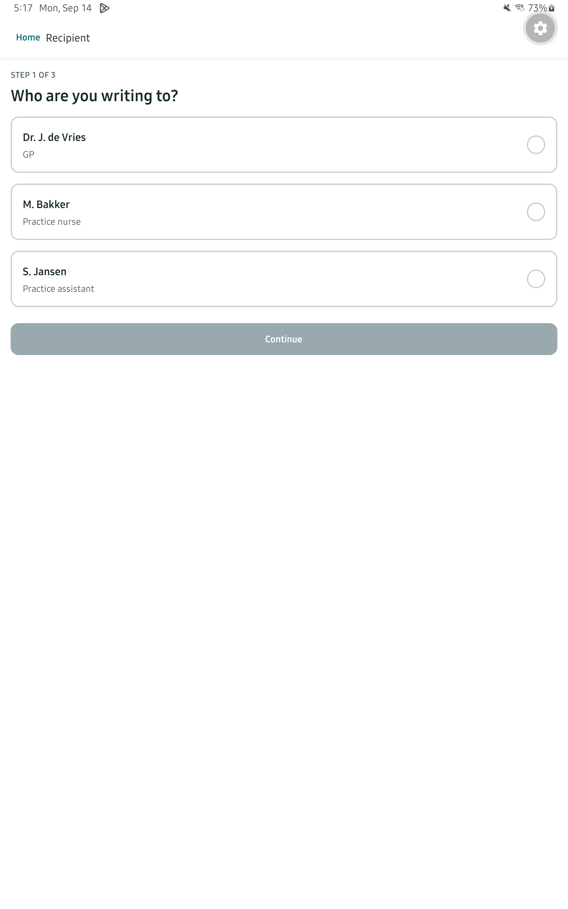
R-1 — MEDIUM · Message step · the camera can cost the patient the whole message
What a patient sees. They write their question, tap "Take a photo", take the picture and accept it — and land back on the home screen. The message they typed and the photo they just took are both gone, with no warning and nothing to recover from. Starting over is the only option.
What happens. The system camera is a heavy foreground app. On this tablet, which has 3.4 GB of RAM, the platform reclaims memory while the camera is in front and the app's own process is one of the things it takes. When the capture finishes, the result is handed back to a freshly started process; the app restarts from its entry point on the home screen, because nothing about the draft is persisted and nothing checks for a capture that completed while the app was not alive.
Repro (default practice, no faults): home, Write to your practice, pick a recipient, answer the question, type a message on step 3, "Take a photo", take the picture, accept it. Observed on 4 of 5 captures; the first one survived, so it is frequent rather than certain. The library path did not reproduce it once — Android's photo picker is far lighter than the camera app.
Where it points. src/features/econsult/components/PhotoPicker.tsx launches the camera and waits on the returned promise; there is no handling for the case where the process does not live long enough to receive it, and no draft is written anywhere outside memory. Two separate gaps: the capture result is dropped, and the typed message is dropped with it.
Measured in Expo Go, whose runtime footprint is larger than a standalone build's. A standalone build would be evicted less readily, but the 3.4 GB class of device plus a camera intent is exactly the case this path has to survive, and nothing in the app makes it survivable.
R-2 — LOW · Message step · on a tablet the photo preview shows a sliver of the photo
What a patient sees. The attached photo is shown in a full-width box of fixed height, cropped to fill. On a phone that is close to a 2:1 letterbox; at 853 points of width it is about 4:1, so a portrait photo of a rash appears as a horizontal band through its middle and the patient cannot tell from the preview what they actually attached.
The fixed height is deliberate — it keeps the layout from jumping when a photo of unknown proportions arrives — so this is a tablet-width consequence of that choice rather than a mistake. A maximum width on the preview, or a height that follows the width, would fix it without giving the layout shift back. Visible in D1-09-photo-attached-before-send.png, where the attached image is a test card of even horizontal bands and only a couple of its twelve bands are inside the preview.
Observations, not defects
- The camera permission copy is the platform's, not the app's. Android shows "Allow Expo Go to take pictures and record video?"; the app's own camera explanation is an iOS usage string and is not shown here. Nothing to fix, but worth knowing that the reassuring sentence the app supplies is not what an Android patient reads.
- The expo-router cold-start warning reappeared. The same
useLinkingstate-update warning recorded as an observation after the emulator fixes showed up again here, on the repeated cold starts that defect R-1 forces. Its stack is still entirely insidenode_modules, with no application frame. - Expo Go does not lock the host activity to portrait. The activity hosting the app asks the platform to follow the physical sensor rather than requesting portrait, so the portrait setting in
app.jsonis not being enforced at the platform level in Expo Go. Whether the app therefore rotates when the tablet is physically turned was not established.
Not verified on the real device
- Rotation while the camera is open, and with it the question of whether the capture survives a configuration change. The system camera follows the physical accelerometer and ignores a software rotation request, so this needs someone to turn the tablet by hand while the camera is open.
- Whether the app itself rotates when the tablet is turned. Related to the point above: the host activity is not portrait-locked at the platform level, which makes the emulator pass's reading of check 48 worth re-testing by hand on hardware.
- The exact wording TalkBack speaks for the four header controls. Screen-reader focus could not be moved onto the navigation header from this harness, so the accessible names are reported from the platform's own accessibility tree rather than from the speech stream. The names are unambiguous, and the spoken wording for the rest of the flow is already recorded under TalkBack spoken text.
State left behind
TalkBack disabled and confirmed unbound, with touch exploration off and the tablet's pre-existing accessibility service untouched. Developer settings back at prc-0421, Latency Default, all four faults None, Force offline off. The app is on the home screen with no offline banner. Font scale and rotation were left as the tablet's owner had them. The camera permission granted during the pass was left granted; the temporary image placed in the gallery for the library check was deleted.
Keyboard
A later pass on the same emulator, after the keyboard-reveal fix, at font scales 1.0 and 2.0, with the 2.0 case captured before and after the fix. Two Android findings shaped the fix: the keyboard's reported coordinate is a screen value while the window measure excludes the status bar, so the reveal now measures the field against the root view; and Expo Go's resize mode does not shrink the content, so Android is padded for the keyboard like iOS and the reveal re-runs once the padding has grown the page. At 1.0 the field already clears the keyboard and nothing scrolls; at 2.0 the page scrolls by exactly the covered part plus the margin, where before the fix only the top of the field was visible. On iOS the reveal is minimal, and at the largest size it clamps at the field's top because no scroll can show label and field together; that run is on the phone lane.
| # | State | Observed | Verdict |
|---|---|---|---|
| K1 | Step 3, font scale 1.0, keyboard up | The field already clears the keyboard; nothing scrolls | PASS |
| K2 | Step 3, font scale 2.0, keyboard up, before the fix | Only the top of the field visible above the keyboard; no scroll | FAIL before the fix |
| K3 | Step 3, font scale 2.0, keyboard up, after the fix | The page scrolled by exactly the covered part plus the margin; label, hint, caret and the field's bottom border all above the keyboard | PASS |
{kind=link}
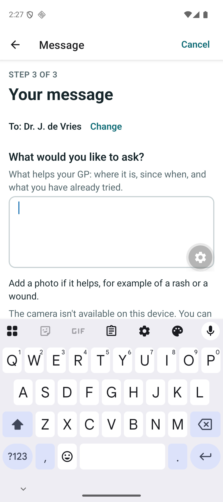
{kind=link}
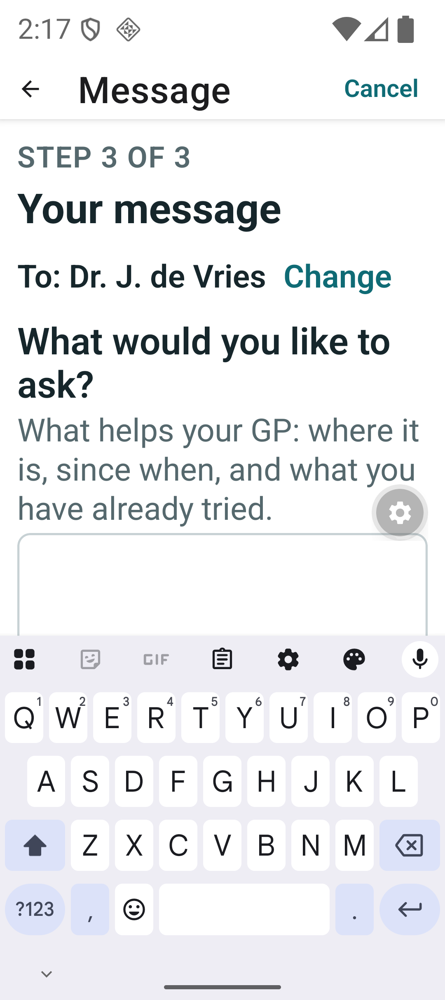
{kind=link}
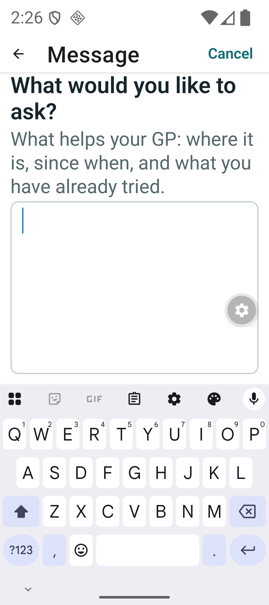
Evidence
114 screenshots and seven text files in this directory: 64 and four from the original emulator run, the eleven R* screenshots and three R* trees from the re-check, the fifteen T* screenshots of TalkBack's spoken text, the six TR* screenshots from the spoken-output re-check, and the eighteen D1-* screenshots from the real-device pass, plus the three keyboard-reveal-* screenshots from the later keyboard pass. The state left behind on the emulator: font scale back to 1.0, TalkBack disabled with its speech-output display off, rotation back to automatic, and Developer settings back at prc-0421 / Latency Default / all faults None / Force offline off. The tablet is described under Real device.
Text evidence: report.md, setup.log, a11y-choicegroup-stale-label.txt, a11y-not-found-link.txt, talkback-method-and-counts.txt, R1-choicegroup-label-reset.txt, R2-not-found-button.txt, R3-error-card-reveal.txt